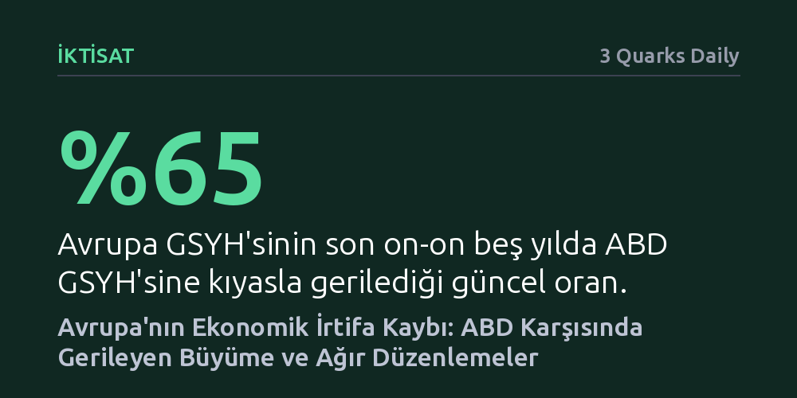

IKTISAT · 3 Quarks Daily · 2026-10-12
Avrupa'nın milli geliri son on beş yılda ABD'nin yüzde 90'ından yüzde 65'ine geriledi. Bu ekonomik irtifa kaybının temelinde parçalı iç pazar, katı istihdam kuralları ve aşırı düzenleyici yükler yatıyor.
Avrupa'nın refah modelinin sürdürülebilirliği sorgulanırken, aşırı düzenlemelerin küresel rekabet gücünü nasıl erittiğini somut verilerle ortaya koyuyor.

Küresel finans dünyasının en büyük bankalarından JPMorgan'ın tepe yöneticisi Jamie Dimon'ın Avrupa politika yapıcılarına yönelik sert uyarıları, kıtanın son yıllardaki sessiz ekonomik gerilemesini yeniden tartışmaya açtı. Avrupa'nın küresel rekabet gücünün hızla eridiğini vurgulayan bu değerlendirme, yalnızca diplomatik temaslarda değil, şirket hissedarlarına iletilen yıllık mektuplarda ve uluslararası düşünce kuruluşlarının toplantılarında da güçlü bir şekilde dile getirildi. Temel tez, Avrupa ile ABD ekonomisi arasındaki mesafenin son on ila on beş yılda tahmin edilenden çok daha hızlı ve dramatik biçimde açıldığı gerçeğine dayanıyor.
Bu gerilemenin en somut ve çarpıcı göstergesi gayri safi yurtiçi hasıla oranlarında görülüyor. Yaklaşık on beş yıl önce ABD milli gelirinin yüzde 90'ına denk gelen Avrupa ekonomisi, günümüzde bu seviyenin yüzde 65'ine kadar gerilemiş durumda. Bir zamanlar denk küresel güçler olarak kabul edilen iki blok arasında yaşanan bu belirgin ayrışma, Avrupa'nın küresel değer üretimindeki ağırlığını hızla kaybettiğini gösteriyor.
Avrupa'nın ABD karşısında zemin kaybetmesinin temelinde geçici dalgalanmalar değil, kıtanın iktisadi işleyişine yerleşmiş yapısal kısıtlar yatıyor. Bunların başında, kıta genelinde var olduğu varsayılan iç pazarın gerçekte derin biçimde parçalanmış olması geliyor. Sermayenin, yeni girişimlerin ve yenilikçi hizmetlerin sınırlar arasında serbestçe büyüyememesi, Avrupalı şirketlerin küresel ölçekte rekabetçi teknoloji devlerine dönüşmesini baştan engelliyor.
Buna ek olarak iş dünyasının üzerine binen aşırı düzenleyici yükler ve yüksek vergi oranları, üretken sermayeyi kıtadan uzaklaştırıyor. İstihdam piyasalarındaki aşırı korumacı ve katı kurallar şirketlerin hızla değişen küresel dinamiklere uyum sağlama esnekliğini azaltırken; yüksek kamu borçları ve geniş sosyal refah harcamaları düşük büyüme temposuyla birleştiğinde kamu maliyesini ağır bir baskı altına sokuyor.
Ortaya çıkan bu tablo, transatlantik dünyadaki iki farklı ekonomik felsefenin sonuçlarını net biçimde gözler önüne seriyor. ABD tarafı derin sermaye piyasaları, inovasyona alan açan yapısı ve iş yapma kolaylığı sayesinde küresel ölçekteki en müreffeh ekonomilerden biri olma konumunu pekiştirirken; Avrupa, aşırı kuralcılık ve riskten kaçınma refleksiyle kendi büyüme damarlarını zayıflatıyor. İktisat yazınında kıtanın geçmişteki yapısal durgunluklarını tarif etmekte kullanılan avroskleroz tartışmaları, bu tabloyla birlikte yeniden canlanıyor.
Söz konusu ayrışma salt istatistiksel bir büyüklük farkından ibaret kalmayıp, Avrupa'nın küresel jeopolitikadaki stratejik ağırlığını da doğrudan tehdit ediyor. Sosyal devlet kazanımlarını korurken verimlilik ve ekonomik büyümeyi canlandıracak reformları hayata geçiremeyen kıta, kritik teknolojilerde ve küresel yatırımlarda inisiyatifi giderek ABD ve diğer dinamik bölgelere bırakma riskiyle karşı karşıya bulunuyor.